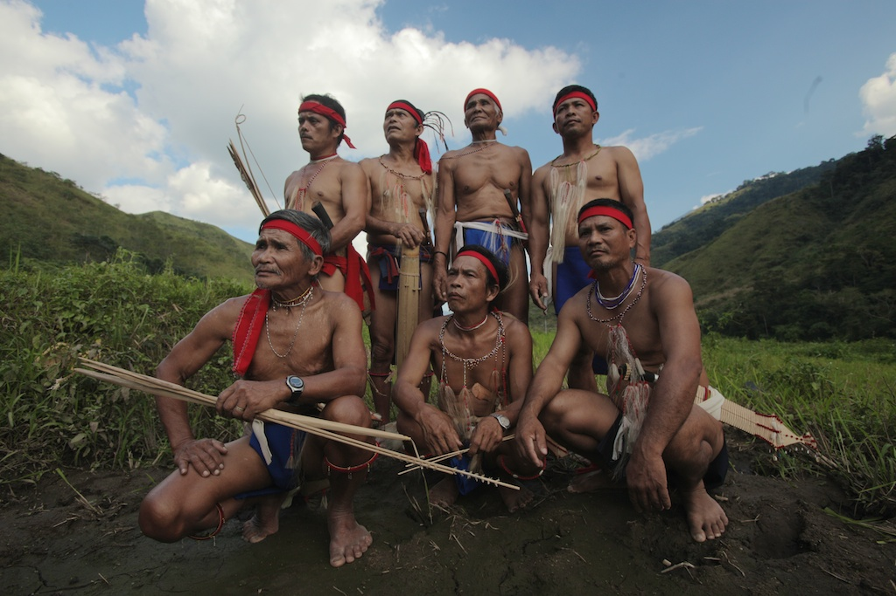
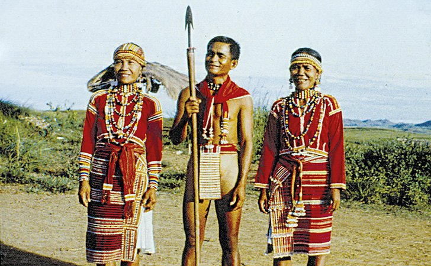
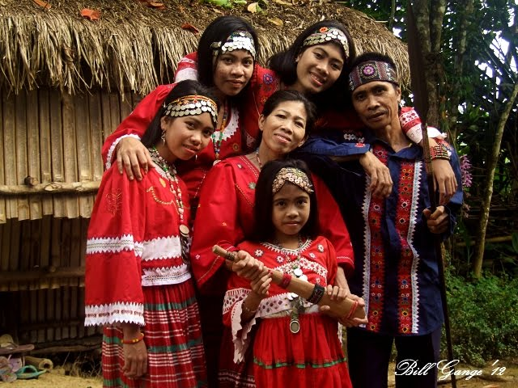
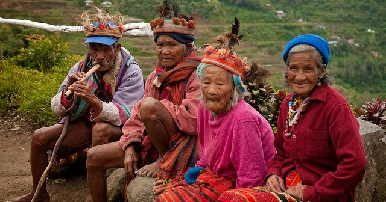

Nueva Vizcaya is home to five major indigenous groups, each with their own language, customs, and traditions that have been preserved for generations.

The Bugkalot, also known as Ilongot, are an indigenous group primarily inhabiting the eastern mountains of Nueva Vizcaya. Known for their intricate beadwork, colorful attire, and ancient traditions, they are one of the most studied indigenous groups in the Philippines. The Bugkalot are celebrated for their expressive songs and oral literature that tell stories of their ancestors.

The Gaddang people inhabit the northern and central areas of Nueva Vizcaya and are known for their distinctive woven textiles, characterized by geometric patterns in vivid colors. The Gaddang are skilled farmers and are known for practicing traditional rice cultivation rituals. Their weaving traditions are recognized as an important part of Philippine cultural heritage.

The Isinai are among the lowland indigenous communities of Nueva Vizcaya, concentrated mainly in Aritao and surrounding areas. They are known for their unique language (also called Isinay), traditional folk music, and colorful festivals. The Isinai maintain strong community bonds through shared agricultural practices and ritual celebrations tied to the harvest season.

The Kalanguya inhabit the highland areas of Kayapa, Ambaguio, and Santa Fe. They are related to the Kankana-ey of Benguet and are known for their extensive knowledge of highland agriculture, medicinal plants, and traditional rituals. The Kalanguya's vibrant cultural practices include communal dances and ceremonies tied to planting and harvest seasons.
Traditional indigenous music uses bamboo instruments, gongs, and flutes. Community dances are performed during planting seasons, harvest festivals, and important life events.
Intricate woven cloth featuring geometric patterns is a hallmark of Nueva Vizcaya's indigenous groups. Baskets, pottery, and beadwork are also important craft traditions passed down through generations.
Many indigenous communities still practice traditional agricultural rituals tied to planting and harvesting rice, invoking blessings for good crops and community prosperity.